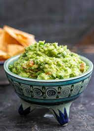

Guacamole

Ingredients
- 2 ripe avocados, peeled and pitted
- 1/4 cup chopped onion
- 1/4 cup chopped fresh cilantro
- 1 tablespoon lime juice
- 1/2 teaspoon salt
- 1/2 teaspoon ground cumin
- 1/4 teaspoon cayenne pepper
Preparation Time
10 minutes
Instructions
-
In a medium bowl, mash the avocados with a fork or potato masher until
they are mostly smooth.
-
Stir in the onion, cilantro, lime juice, salt, cumin, and cayenne pepper
until well combined.
- Taste and adjust seasonings as necessary.
- Serve immediately, or cover and refrigerate until ready to serve.
Recipe Book